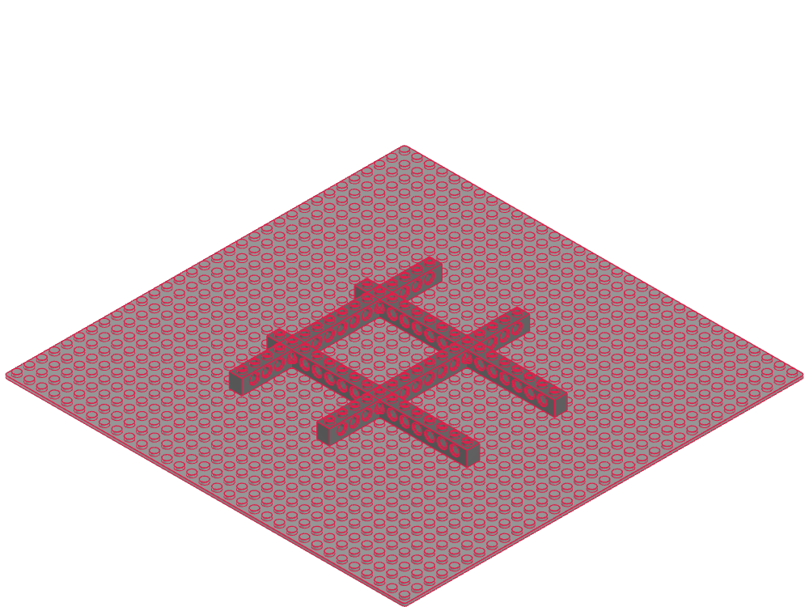

LEGO Technic Build Booklet — Flatbed 8mm Telecine
12 stud-accurate steps · Use ← / → arrow keys or buttons to flip pages · New pieces highlighted in red
Dark Mode
← Prev
Next Step →
1
BAG 1
Baseplate & Cross Anchor Rails
Parts Needed for This Step
3D Isometric LEGO CAD Render (LeoCAD)
3D LEGO CAD
Full Color 3D
2D Schematic

New bricks in THIS step
Prior steps (faded)
Open
cad/telecine_flatbed.ldr
in LeoCAD to orbit in 3D
Side View (Looking West from Camera)
Height Stack